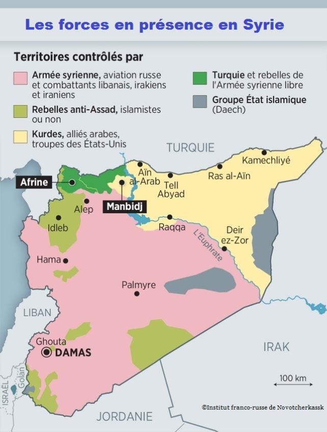
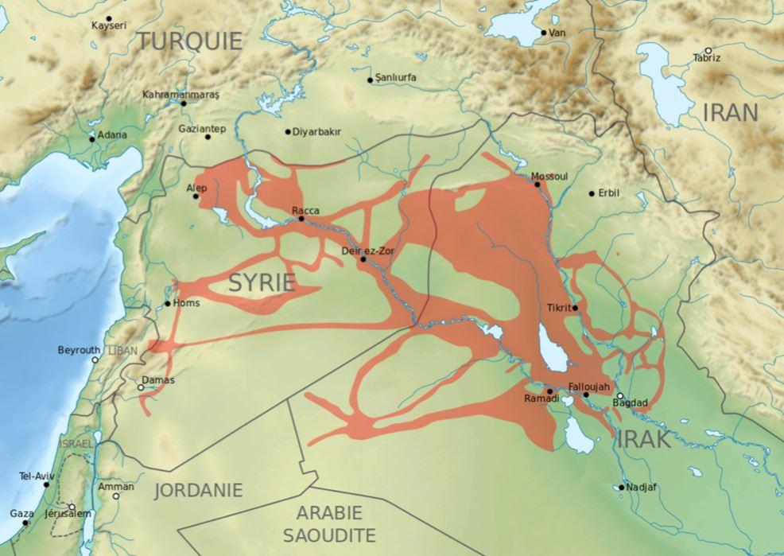

À première vue, le retrait des forces américaines de Syrie et les opérations militaires menées par la Turquie au Kurdistan n'ont aucun lien, si ce n'est l 'opportunité saisie par Erdogan pour résoudre le problème de l'indépendance de cette province dissidente.
En regardant d'un peu plus près, on constate qu'une véritable stratégie de l'ombre a été mise en place par les protagonistes et que l'Union Européenne, grande perdante, n'a rien vu venir.
Cette véritable partie d'échecs, qui s'est jouée en Syrie, s'est faite au détriment de l'Union Européenne dont l'absence totale de politique étrangère éclate au grand jour. Malgré les airs entendus d'Emmanuel Macron jouant les entremetteurs entre l'Iran et les Etats-Unis à Biarritz puis à l'ONU, personne n'avait vu comment les pions étaient manœuvrés sur l'échiquier de la Syrie.

Un petit rappel historique
Ce qu'il est convenu d'appeler « l'affaire Syrienne » débute en 2011, au moment des printemps arabes1.
Le général américain Websley Clark en donne un certain éclairage. Il explique avec précision les évènements qui se sont succédés à partir du 11 septembre 2001 et comment le « deep state » a pris le contrôle de la politique étrangère américaine :
Voici ce qui figure sur le site « Arrêt sur info »2
« Le 11-Septembre, nous n’avions pas de stratégie, pas d’accord interpartis, ni une bonne compréhension de ce qui s’était passé, et nous avons eu à la place un coup d’État politique dans ce pays. Un coup d’État politique. Des types impitoyables ont pris la direction de notre politique étrangère, sans se donner la peine de nous en informer. Je suis allé au Pentagone 10 jours après le 11-Septembre. Je ne pouvais pas rester à l’écart de notre armée.
J’y suis allé pour voir Donald Rumsfeld, avec qui j’avais travaillé dans les années 70, et je lui ai demandé : « Est-ce que j’ai été bon sur CNN ? » Il a répondu « Oui » et a ajouté : « J’ai lu votre livre ». Le livre parle de la guerre du Kosovo. Puis il me dit : « Personne ne va nous dire où et quand on peut bombarder un pays, personne ! » Il poursuit : « Je pense l’appeler ‘coalition flottante’. Votre avis ? » J’ai répondu, « Monsieur, merci d’avoir lu mon livre, et… » Il m’a alors coupé en disant : « Merci. Je n’ai plus de temps à vous consacrer. » Vraiment ! Et alors que je descendais pour quitter le Pentagone, un officier de l’État-major m’appelle dans son bureau et me dit : « Je veux que vous sachiez que nous allons attaquer l’Irak. » J’ai demandé « Pourquoi ? » Il a répondu « Nous ne savons pas. » J’ai dit : « Avons-nous établi un lien entre Saddam Hussein et le 11/9 ? » Et il m’a répondu que non.
De retour au Pentagone, six semaines plus tard, j’ai revu le même officier et lui ai demandé « Est-il toujours prévu que nous attaquions l’Irak ? » Il a répondu « Monsieur, vous savez, c’est bien pire que ça. » Il a pris un document sur son bureau et me dit : « J’ai reçu ce mémo du Secrétaire à la Défense … qui dit que nous allons attaquer et détruire les gouvernements dans 7 pays en 5 ans. Nous allons commencer par l’Irak, et puis nous irons en Syrie, au Liban, en Libye, Somalie, au Soudan et en Iran. » J’ai dit « 7 pays en 5 ans ! » Je lui ai demandé « est-ce un mémo top secret ? » Il me répondit « Oui, Monsieur ! » Je lui ai dit : « Alors, ne me le montrez pas. » Il allait le faire. « Sinon je vais en parler. » J’ai gardé cette information pour moi pendant longtemps, 6 ou 8 mois, j’étais tellement abasourdi que je ne parvenais pas à en parler, et je ne pouvais pas croire que c’était vrai, mais c’est bien ce qui s’est passé.
Ces gens ont pris le contrôle de la politique des États-Unis, et j’ai compris alors, je me suis souvenu d’une réunion que j’avais eue avec Paul Wolfowitz en 1991. En 2001, il était vice-Secrétaire à la Défense, mais en 1991, c’était le sous-secrétaire, soit le numéro 3 au Pentagone. Il m’avait dit alors : « nous avons 5 ou 10 ans pour nettoyer tous ces régimes favorables à l’ex-Union soviétique, la Syrie, l’Iran, l’Irak, avant que la prochaine superpuissance n’émerge pour nous défier. » C’était une déclaration stupéfiante : l’armée servirait à déclencher des guerres et à faire tomber des gouvernements et non pas à empêcher les conflits. Nous allons envahir des pays. Mes pensées se bousculaient. J’ai mis ça de côté, c’était comme une pépite que vous conservez. Un groupe de gens a pris le contrôle du pays avec un coup d’État politique, Wolfowitz, Cheney, Rumsfeld…
Je pourrais nommer une demi-douzaine d’autres collaborateurs du Projet pour un Nouveau Siècle Américain (PNAC). Ils voulaient que le Moyen-Orient soit déstabilisé, qu’il soit chamboulé et placé sous notre contrôle. Tout cela nous ramène aux commentaires de 1991. En aviez-vous été informés ? Le plan a-t-il été annoncé publiquement ? Les sénateurs ou les députés ont-ils dénoncé ce plan ? Y a-t-il eu un débat public ? Absolument pas ! Et il n’y en a toujours pas ! Ils ont hâte d’en finir avec l’Irak pour pouvoir aller en Syrie. « Oh, nos légions vont y aller. »
Mais ce n’est pas pour ça que les Américains ont élu George W. Bush. En fait, ils ne l’ont pas vraiment élu. Ce n’est pas pour ça que beaucoup de gens… ce n’est pas pour ça qu’il avait fait campagne. Il avait fait campagne sur une politique étrangère humble. Nous avons eu la politique étrangère la plus arrogante de toute notre histoire. Il a fait campagne sur une absence d’intervention, et nous sommes en Afghanistan et en Irak. C’est stupéfiant !
Que vous soyez démocrate ou républicain, en tant qu’Américains, vous devez vous sentir concernés par la stratégie des Usa dans cette région. Quel est notre but ? Quelles sont nos motivations ? Pourquoi sommes-nous là-bas ? Pourquoi des Américains meurent-ils dans cette région ? C’est ça la vraie question. »
Après ce nécessaire rappel, quelle est la situation aujourd'hui au Moyen Orient ?
L'Irak et la Lybie sont en proie à des convulsions tribales et les États ont pratiquement disparus. L'État Islamique qui avait réussi à s'implanter à cheval sur la frontière Irako-Syrienne est en voie de disparition, après avoir cependant étendu son influence dans différents pays arabes et africains qui pourraient constituer de nouvelles bases avancées en vue d'actions ultérieures.

Carte des territoires contrôlés par l'organisation en mai 2015
Mais c'est en Syrie que la situation est la plus intéressante.
Ce qui avait en 2011 l'apparence d'un soulèvement contre le régime réputé autoritaire de Bachar El Assad s'est ensuite commué en une sorte de constellation de conflits entre différentes entités dont les objectifs apparaissent, au fil du temps, tantôt convergents et tantôt antagonistes. Ces conflits mettent en jeu non seulement des acteurs syriens mais également étrangers.
Ce sont leurs divisions internes qui ont permis à l'État islamique de s'implanter plus solidement qu'en Irak. C'est dans le but de contrer cette percée syrienne de l'EI que de nombreuses coalitions internationales, mettant en jeu, sous une sorte de leadership américain, des forces venant d'autres pays comme la France ou la Jordanie et probablement l'Iran, sont intervenues dans ce conflit.
Le rôle complexe de la Turquie
Dès 2016, la Turquie a soutenu la rébellion contre Bachar. Il disposait pour cela de groupes ethniques comme les Turkmènes ou encore la brigade Al Zenki et également de certains groupes rattachés aux Frères Musulmans. Mais le président Erdogan avait également un œil sur ce qui se passait au Turkistan.
Ce territoire, à cheval sur la frontière nord entre la Turquie et la Syrie est principalement peuplé par des Kurdes qui réclament leur autonomie, tant à la Turquie que la Syrie. Les mouvements autonomistes kurdes ont immédiatement réalisé le parti qu'ils pouvaient tirer de la situation en Syrie. L'occupation jihadiste du nord de la Syrie ayant fait partir l'armée régulière syrienne, l'autonomie des Kurdes passait par la victoire de ces derniers sur l'armée d'occupation jihadiste. Aidé directement ou indirectement par un certain nombre de pays qui combattaient eux-mêmes le terrorisme islamique, les Kurdes finirent par anéantir l'armée de Daesh et étaient de facto devenus autonomes en Syrie, ce qui ne pouvait qu'inquiéter la Turquie sur le sort du Kurdistan Turc qui allait pouvoir disposer de moyens importants pour acquérir lui aussi sa souveraineté.
Le départ des américains
Le président Trump confirma une fois de plus son alignement sur la « doctrine de Monroe » qui, rompant avec ses prédécesseurs, réaffirma le retour de l'isolationnisme américain avec lequel il fallait désormais compter.
Le départ de l'armée américaine laissant le champ libre aux troupes turques, celles-ci ont pu faire une incursion en Syrie dans le but de régler leur compte aux combattants kurdes en mal d'autonomie. Cependant, ils n'avaient pas mesuré avec certitude la résistance qu'ils allaient leur opposer. L'Union Européenne tenta bien de s'y opposer, mais la menace à peine voilée d'Erdogan de faire partir vers les pays européens les 3,6 millions d'émigrés que l'Union Européenne lui avait demandé de retenir contre le versement de plusieurs milliards d'euros mit vite un terme à ces velléités.
Poutine maître du jeu
Plusieurs choses ont poussé Erdogan à cette opération militaire au nord de la Syrie. Tout d'abord, il comptait sur le soutien des américains, qui ne l'avaient jamais laissé tomber. Il voulait aussi « redorer son blason » après l'échec électoral d'Ankara. Le retrait américain a obligé les Kurdes à solliciter, au détriment de leur aspiration d'autonomie, le soutien de Bachar El Assad. Et c'est là que Poutine est entré en scène en modifiant complètement l'équilibre des forces. Au-delà de ce résultat, non négligeable en soi, de l'arrêt des opérations militaires turques, c'est la réhabilitation de Bachar El Assad qui se profile. C'est un échec pour les européens qui voulaient se débarrasser de lui depuis plusieurs années. C'est également un autre danger pour l'Europe de voir affluer des terroristes islamiques jusque-là confinés au nord de la Syrie et auxquels l'offensive turque a rendu la liberté.
Un bilan sans appel pour les mondialistes
Ce changement dans la politique étrangère américaine marque la volonté de Trump de ne plus engager les Etats-Unis dans des interventions extérieures qui faisaient d'eux les « gendarmes du monde » Poutine est également un fervent partisan des souverainetés nationales, vision diamétralement opposée à celle des « mondialistes ». En mettant ainsi l'Union Européenne dans un « corner », ils font la démonstration de son absence de poids politique et de son incapacité à peser sur le plan international. Cet épisode se traduit bien par une nouvelle victoire de Trump sur le « deep state3 ».
Partager cette page